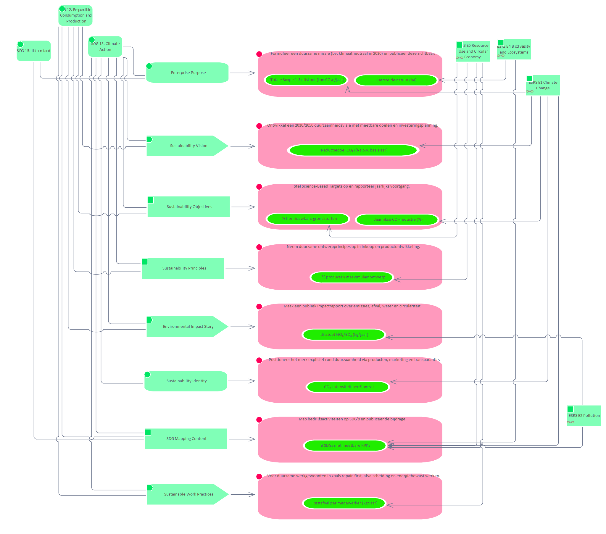

Identity

Description:
Elements
- # SDGs met meetbare KPI’s
- % hernieuwbare grondstoffen
- % producten met circulair ontwerp
- CO₂-intensiteit per € omzet
- Enterprise Purpose
- Environmental Impact Story
- ESRS E1 Climate Change
- ESRS E2 Pollution
- ESRS E4 Biodiversity and Ecosystems
- ESRS E5 Resource Use and Circular Economy
- Formuleer een duurzame missie (bv. klimaatneutraal in 2030) en publiceer deze zichtbaar.
- Herstelde natuur (ha)
- Jaarlijkse CO₂-reductie (%)
- Maak een publiek impactrapport over emissies, afval, water en circulariteit.
- Map bedrijfsactiviteiten op SDG’s en publiceer de bijdrage.
- Neem duurzame ontwerpprincipes op in inkoop en productontwikkeling.
- Ontwikkel een 2030/2050 duurzaamheidsvisie met meetbare doelen en investeringsplanning.
- Positioneer het merk expliciet rond duurzaamheid via producten, marketing en transparantie.
- Reductiedoel CO₂ (% t.o.v. basisjaar)
- Restafval per medewerker (kg/jaar)
- SDG 12. Responsible Consumption and Production
- SDG 13. Climate Action
- SDG 15. Life on Land
- SDG Mapping Content
- Stel Science-Based Targets op en rapporteer jaarlijks voortgang.
- Sustainability Identity
- Sustainability Objectives
- Sustainability Principles
- Sustainability Vision
- Sustainable Work Practices
- Totale Scope 1-3 uitstoot (ton CO₂e/jaar)
- Uitstoot NOₓ/SOₓ (kg/jaar)
- Voer duurzame werkgewoonten in zoals repair-first, afvalscheiding en energiebewust werken.
Generated: 2026-06-22 17:43:29